https://scienceandsociety.duke.edu/
Screenshot 06/08/2018:
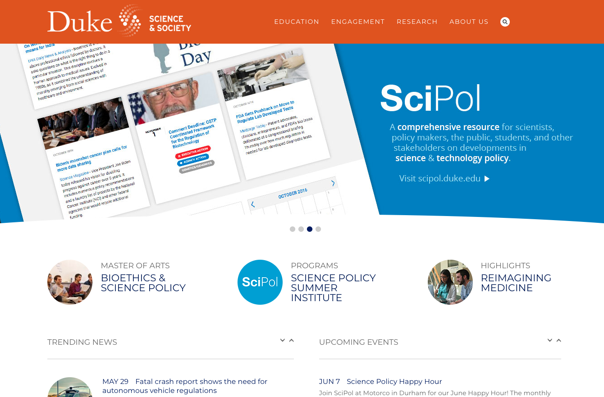
Thank you for your interest in improving the accessibility of Scienceand society.duke.edu.
The assessment includes the homepage, landing page representative, and the contact form. The homepage assessment includes global elements such as navigation and search. Those global elements are not repeated in the other documents. When they are fixed on the homepage it should naturally propagate to the subpages.
If you need any assistance in understanding the issues or performing the fixes please reach out to us at web-accessibility@duke.edu or 919-613-4811. We may be able to come to you to assist with the remediation. The services provided by the Web Accessibility Team are free to Duke websites.
Table of Contents
[id] attributes on the page are not unique
[user-scalable="no"] is used in the <meta name="viewport"> element or the [maximum-scale] attribute is less than 5.
Links require hover states so people can tell if they are hovering over a link or not.
Missing hover state.
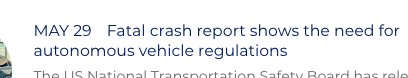
Near line 1100 in styles.css
#home-events h3 a,
#trending-news h3 a {
text-decoration: none;
color: #001b62;
}There are a few ways to fix this. The easiest way is to add an underline on hover.
Place after to CSS mentioned above./
#home-events h3 a:hover
#home-events h3 a:focus,
#trending-news h3 a:hover,
#trending-news h3 a:focus {
text-decoration: underline;
}
Missing hover state.
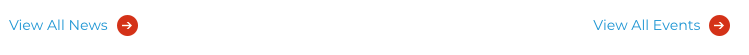
a.all-events:hover {
background-image: url(images/blue-arrow-button.png);
}Near line 2639 in style.css add text decoration underline.
a.all-events:hover {
text-decoration:underline;
background-image: url(images/blue-arrow-button.png);
}
Low-contrast text is difficult or impossible for many users to read. Learn more.
<nav id="nav" role="navigation">
<ul>
<li class="">
<a href="https://scienceandsociety.duke.edu/learn">Education</a>
<li>
<li class="">
<a href="https://scienceandsociety.duke.edu/engage">Engagement</a>
</li>
<li class="">
<a href="https://scienceandsociety.duke.edu/research">Research</a>
</li>
<li class="">
<a href="https://scienceandsociety.duke.edu/about-us">About Us</a>
</li>
<ul>
</nav>Fix any of the following: Element has insufficient color contrast of 4.07 (foreground color: #ffffff, background color: #d75404, font size: 12.8pt, font weight: normal). Expected contrast ratio of 4.5:1
If the font-size is increased to 17px the contrast ratio only needs to meet a 3:1 ratio.
Using the following selector, it can change the size of the four links without interfering with the sub-navigation or the layout in any way.
#landing-header span a,
#ma-description h4 a,
#ma-header h4 a {
font-size: 17px;
}
<a href="https://scienceandsociety.duke.edu/about-us/people/">People</a>Fix any of the following: Element has insufficient color contrast of 3.57 (foreground color: #cccccc, background color: #666666, font size: 10.5pt, font weight: normal). Expected contrast ratio of 4.5:1`
Change: #CCCCCC/#666666
To: #E6E6E6/#666666
In the generaged styles.css near line 3246 change #CCCCCC to #e6e6e6e;
#footer-nav ul li a {
font-family: 'Montserrat', sans-serif;
color: #e6e6e6e; /* new color */
font-size: 1em;
text-transform: uppercase;
text-decoration: none;
font-weight: normal;
}
Additional debugging details
Selector path:
[u'#menu-item-3289 > a[href$="____/"]']
DOM path:
1,HTML,1,BODY,25,DIV,0,DIV,0,DIV,0,DIV,0,UL,0,LI,0,A
Screen readers cannot read text inside an image. They rely on the alt attribute text.
WCAG Images of Text Success Criteia states that text should only be used in images unless it is "essential". Admittedly that is not very specific.
Here is some informal advice that is more black-and-white:
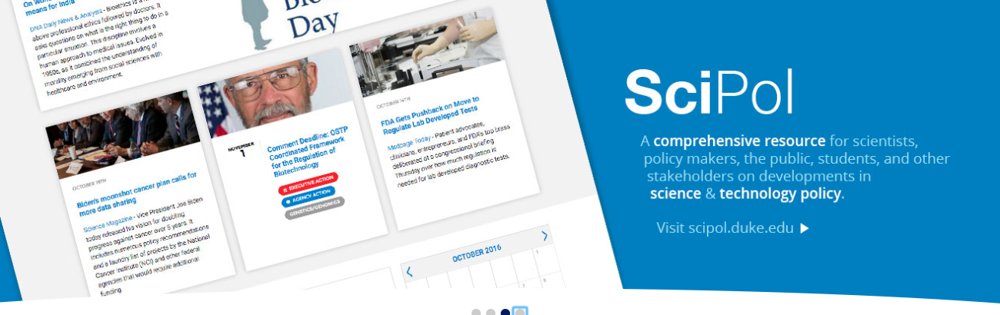
Current alt text is "scipol". That alt text does not accurately or fully describe the text in the image, depriving the screen reader user of important information.
This is just too many words to put in an alt tag. This image is also a link, since there is no text in the <a> link the alt text is the only context that would be read to a screen reader. Link text needs to describe what the link does and indicate where it will take the user.
Automated tests cannot detect contrast ratios of text in images. The text in this slide requires a 3:1 contrast ratio.
Using the Color Contrast Analyzer tool we can run tests to help determine if the contrast ratio is adequate.
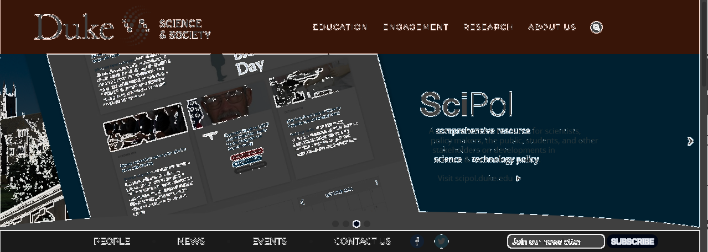
Text that has no outline does not meet the minimum contrast ratio.
[id] attributes on the page are not uniqueThe value of an id attribute must be unique to prevent other instances from being overlooked by assistive technologies. Learn more.
<div id="wrapper"></div>
Additional debugging details
Selector path:
[u'#header > div:nth-child(1)']
DOM path:
1,HTML,1,BODY,8,DIV,0,DIV
<div id="clear"></div>
Additional debugging details
Selector path:
[u'#form1 > div:nth-child(3)']
DOM path:
1,HTML,1,BODY,8,DIV,0,DIV,5,DIV,0,FORM,2,DIV
<div id="updown">
<a id="up" class="news-up">Up</a>
<a id="down" class="news-down">Down</a>
</div>
Additional debugging details
Selector path:
[u'div:nth-child(1) > a.news-up']
DOM path:
1,HTML,1,BODY,12,DIV,1,DIV,0,DIV,0,DIV,0,A
<div id="listed-thumbs"><img width="100" height="100" src="https://scienceandsociety.duke.edu/wordpress/wp-content/uploads/Uber-AV-100x100.png" class="attachment-thumbnail size-thumbnail wp-post-image" alt=""></div>
Additional debugging details
Selector path:
[u'#trending-news > div:nth-child(1)']
DOM path:
1,HTML,1,BODY,12,DIV,1,DIV,0,DIV,0,DIV
Labels ensure that form controls are announced properly by assistive technologies, like screen readers. Learn more.
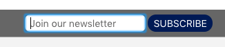
<input type="email" value="" name="EMAIL" class="required email" id="mce-EMAIL" placeholder="Join our newsletter">Add a label and associate it with the form field. Optionally it can be visually hidden so it does not effect the layout. Using the .visually-hidden utility class.
Add this HTML:
<label for="mce-EMAIL" class="visually-hidden">Subscribe to our newsletter</label>` to associate the label with that form field.Add this CSS to hide the label visually, but keep it availible to screen readers.
.visually-hidden {
position: absolute !important;
height: 1px; width: 1px;
overflow: hidden;
clip: rect(1px, 1px, 1px, 1px);
}For more options see 'Additional debugging details' below.
Additional debugging details
Selector path:
[u'#mce-EMAIL']
[u'#mce-EMAIL']
DOM path:
1,HTML,1,BODY,25,DIV,0,DIV,2,DIV,0,FORM,0,DIV,0,DIV,0,INPUT
Summary:
Fix any of the following: aria-label attribute does not exist or is empty aria-labelledby attribute does not exist, references elements that do not exist or references elements that are empty or not visible Form element does not have an implicit (wrapped)
Link text (and alternate text for images, when used as links) that is discernible, unique, and focusable improves the navigation experience for screen reader users. Learn more.
<a href="https://scienceandsociety.duke.edu/">
<img src="https://scienceandsociety.duke.edu/wordpress/wp-content/themes/dukess2014/images/header-logo2.png" alt="">
</a>Adding alt attribute to image element will provide sufficient text to make the link accessible.
Since this is the header logo that takes people back to the home page, a good alt tag would be alt="Science and Society Home".
Additional debugging details
Selector path:
[u'#logo > a']
DOM path:
1,HTML,1,BODY,8,DIV,0,DIV,0,DIV,0,A
Summary:
Fix all of the following: Element is in tab order and does not have accessible textFix any of the following: Element does not have text that is visible to screen readers aria-label attribute does not exist or is empty aria-labelledby attribute does not exist, references elements that do not exist or references elements that are empty or not visible Element's default semantics were not overridden with role="presentation" Element's default semantics were not overridden with role="none"
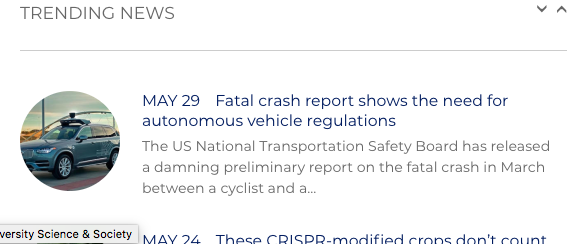
<li class="news_entry">
...
</li>There are multiple issues with this template.
1. Empty alt tag
2. Using <div id='clear'></div> multiple times. ID's are required to be unique. This is both required to make the HTML validate as well as making the site compatible with assistive technologies. After some testing, it looks like this <div> serves no purpose anyway. It can just be deleted
3. Stray empty <a> tag, which can also be deleted.
Please see Gist for details on what to fix on all the issues
Additional debugging details
Selector path:
[u'#pane-target > ul > li:nth-child(3) > div:nth-child(2) > p > a']
DOM path:
1,HTML,1,BODY,12,DIV,1,DIV,0,DIV,2,DIV,0,UL,2,LI,1,DIV,1,P,1,A
Summary:
Fix all of the following: Element is in tab order and does not have accessible textFix any of the following: Element does not have text that is visible to screen readers aria-label attribute does not exist or is empty aria-labelledby attribute does not exist, references elements that do not exist or references elements that are empty or not visible Element's default semantics were not overridden with role="presentation" Element's default semantics were not overridden with role="none"
[user-scalable="no"] is used in the <meta name="viewport"> element or the [maximum-scale] attribute is less than 5.Disabling zooming is problematic for users with low vision who rely on screen magnification to properly see the contents of a web page. Learn more.
<head>
...
<meta name="viewport" content="width=device-width, initial-scale=1.0, maximum-scale=1.0">
...
</head>Change maximum-scale attribute to 5.
<meta name="viewport" content="width=device-width, initial-scale=1, maximum-scale=5">
Custom interactive controls are keyboard focusable and display a focus indicator. Learn more.
Keyboard accessible Search is particularly important. Some keyboard users use search as thier primary method to find content on websites becasuse it can be easier than navigating the whole site. Also, if a keyboard user gives up navigating the website for some reason, search may be thier final resort to find information.
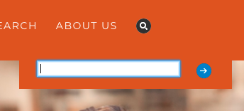
<div id="search-div" style="display: block;">
...
</div> Innaccessible JS behavior
$('document').ready(function() {
$('#show1').click(function() {
$('#search-div').slideToggle(400, function() {
if ($('#search-div').is(':visible')) {
$('#search2').focus();
}
});
});
});1) On trigger element and the target element, remove the following attributes:
class='fade'
style="opacity: 0"
Those attibutes and the related Javascript is wreaking havoc on keyboard accessibility and visibility.
2) Update the current search toggle HTML with this code
<li>
<a href="#search-div" id="show1" aria-role="button" aria-controls="search-div" aria-expanded="true" aria-haspopup="true">
<img alt="" border="0" src="./scienceandociety_files/search-a.png">
</a>
</li>3) Replace the old javascript located in the <head> of the HTML that was controling the search toggle behavior with this accessible version:
$(document).ready(function() {
$('#show1').click(function () {
toggle('search-div', 'show1');
return false
});
function toggle(id, id2) {
var n = document.getElementById(id);
if (n.style.display != 'none') {
n.style.display = 'none';
document.getElementById(id2).setAttribute('aria-expanded', 'false');
document.getElementById(id).setAttribute('aria-hidden', 'true');
} else {
n.style.display = 'block';
document.getElementById(id2).setAttribute('aria-expanded', 'true');
document.getElementById(id).setAttribute('aria-hidden', 'false');
}
}
});
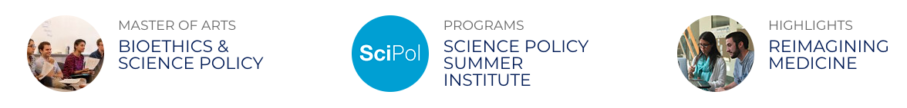
<div id="features">
<div id="ma-feature" class="pin" onclick="window.open('ma', '_self')" style="cursor:pointer;" tabindex="0">
...
</div>
<div id="calendar-feature" class="pin" onclick="window.open('https://scienceandsociety.duke.edu/learn/duke-scipol-summer-institute/', '_self')" style="cursor:pointer;">
...
</div>
<div id="news-feature" class="pin" onclick="window.open('https://scienceandsociety.duke.edu/learn/undergraduate-programs/reimagining-medicine/', '_self')" style="cursor:pointer;">
...
</div>
</div>There is no reason compelling reason for these elements not to be a normal <a> link. It greatly simplifies the markup and will fix multiple accessibilty problems in the process.
<div id="features">
<a id="ma-feature" class="pin" href="/learn/ma/">
...
</a>
<a id="calendar-feature" class="pin" href="/learn/duke-scipol-summer-institute/">
...
</a>
<a id="news-feature" class="pin" href="/learn/undergraduate-programs/reimagining-medicine">
...
</a>
</div>
If new content, such as a dialog, is added to the page, the user's focus is directed to it. Learn more.
This will be fixed by implementing the search fix above.
Ideally, the main navigation should be expanable via the keyboard also, but since all the links are also availible on thier landing pages, it technically passes. But adding some very basic keyboard functionality is a simple cut-paste job. The following JS will expand the selected item's sub-navigation when a user hits the down arrow.
Add this JS inside any existing or new document.ready:
$('#nav > ul > li').on('focus', '> a', function(e) {
$this = jQuery(this);
$this.attr('aria-haspopup', 'true').attr('aria-expanded', 'false');
$this.parent().find('> ul').css('display', 'none').css('visibility', 'hidden');
$this.keydown(function(e) {
if (e.keyCode === 40) {
jQuery(this).attr('aria-expanded', 'true');
jQuery(this).parent().find('> ul').css('display', 'block').css('visibility', 'visible').attr('aria-hidden', 'false');
return false;
}
if (e.keyCode === 38) {
jQuery(this).attr('aria-expanded', 'false');
jQuery(this).parent().find('> ul').css('display', 'none').css('visibility', 'hidden').attr('aria-hidden', 'true');
return false;
}
});
});
Landmark elements (<main>, <nav>, etc.) are used to improve the keyboard navigation of the page for assistive technology. Learn more.
Add an element to wrap the content area. Currently there is none, it will need added because the main area should all be in one.
Add a <main> element to wrap all content area's <div> elements under one element.
Change the Footer's elment from <div>:
<div id="footer">
...
</div>to <footer>:
<footer id="footer">
...
</footer>
Content must be robust enough that it can be interpreted reliably by a wide variety of user agents, including assistive technologies.
(index):47 Mixed Content: The page at 'https://scienceandsociety.duke.edu/' was loaded over HTTPS, but requested an insecure stylesheet 'http://fonts.googleapis.com/css?family=Oswald%3A400%2C300%7COpen+Sans%3A400%2C300&ver=4.9.5'. This request has been blocked; the content must be served over HTTPS.
(index):891 Uncaught TypeError: Cannot read property 'left' of undefined
at HTMLDocument. ((index):891)
at l (jquery.min.js:2)
at Object.fireWith [as resolveWith] (jquery.min.js:2)
at Function.ready (jquery.min.js:2)
at HTMLDocument.A (jquery.min.js:2)
(anonymous) @ (index):891
l @ jquery.min.js:2
fireWith @ jquery.min.js:2
ready @ jquery.min.js:2
A @ jquery.min.js:2
Adding ways to bypass repetitive content lets keyboard users navigate the page more efficiently. Learn more.
Missing bypass block for keyboard users to skip over the menu area when tabbing through a page.
Add a skip-to link bypass block.
The skip-to bypass block needs to be the first link on the page. When a user hits the tab key it gives it focus and as a result becomes visible. If the user hits the enter key while it is focused it will jump to the main content area.
HTML:
Trigger is the first link in the
element<div id="skip-link">
<a href="#main-content" class="element-invisible element-focusable">Skip to main content</a>
</div>Target is added above the main content.
html
<a id="main-content"></a>
CSS: This css may already be available in the theme, If not, please add:
.element-invisible {
margin: 0;
padding: 0;
width: 1px;
position: absolute !important;
clip: rect(1px 1px 1px 1px);
clip: rect(1px,1px,1px,1px);
overflow: hidden;
height: 1px;
}
.element-invisible.element-focusable:active, .element-invisible.element-focusable:focus {
position: static !important;
clip: auto;
overflow: visible;
height: auto;
}
Inaccessible Carousels are the most difficult and most time consuming issue on any website.
Keyboard accessibility is one of the most important aspects of web accessibility. Many users with motor disabilities rely on a keyboard. Blind users also typically use a keyboard for navigation. Some people have tremors which don't allow for fine muscle control. Learn more
This site uses the Wordpress implementation of Soliloquy. It is not accessible for a variety of reasons detailed below.
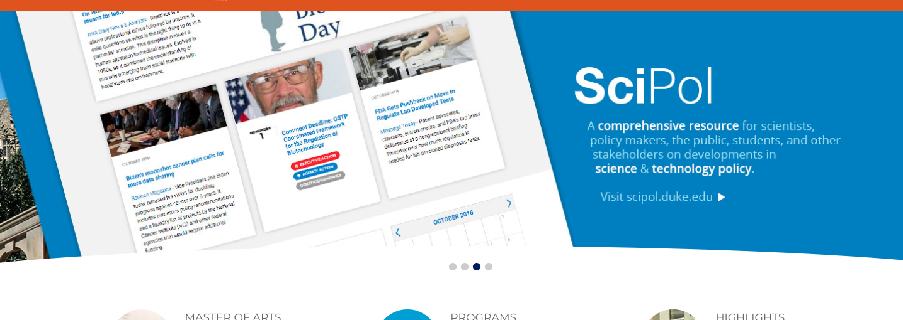
Typically, carousels are prominently located and are used to provide navigation or show page content. Accessible carousels are essential for many website users including:
Because of the inherit usability and accessibility issues all slideshow provide, I always recommend removing them. This can probably be accomplished by having only one slide in the rotator.
That said, if people must keep the slideshow here are a few easy things you can to to help mitigate the issues.
For full compliance Carousels are not allowed to auto-advance.
If the website chooses to keep the autoadvance functionality, it must have a pause button.
This might be possible by changing the slideshows configuration. I expect that there would be some CSS necessary to place it. Documentation on this can be found on Configuring Your Slide See "Show Pause/Play Controls"
Currently the user must hover over the carousel to see the next and back buttons/links with a mouse. Some people cannot use a mouse, so they would never know they could control it. They need to be visible at all times.
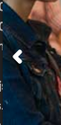;
Add the following CSS to any stylesheet to make the next and back arrow visible at all times.
.soliloquy-outer-container .soliloquy-theme-classic .soliloquy-controls-direction {
display: block;
}outline:none is used on the elements which hides the keyboard focus indicator. If the keyboard focus indicator is hidden, its not keyboard accessible.
Add the following CSS to any stylesheet to make the next and back arrow visible at all times.
.soliloquy-outer-container .soliloquy-container a:focus {
outline: auto 2px Highlight;
outline: auto 5px -webkit-focus-ring-color;
}Expected result when element has keyboard focus:
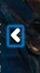
The DOCTYPE declaration must be the very first thing in your HTML document, before the <html> tag.
Current HTML
<!DOCTYPE><!DOCTYPE html>A valid DOCTYPE declaration is requried to validate the code:
After it is fixed, the website developer should look through the errors.